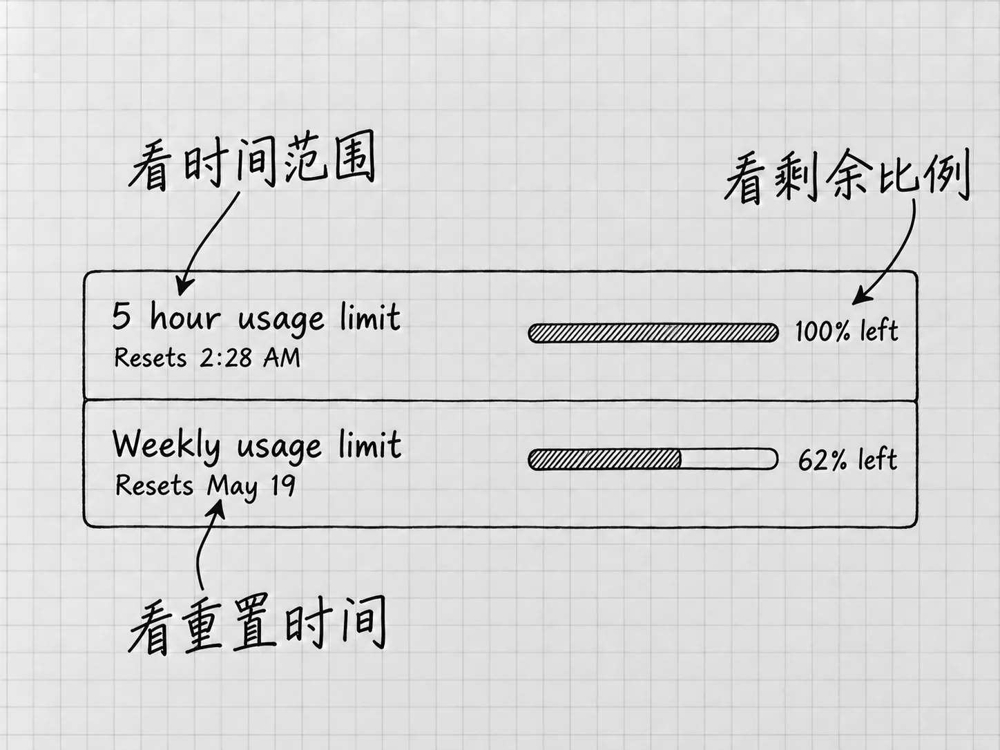

第5章 账号与额度：看懂自己正在用什么
第一次文件任务做完以后，很多人会想到几个问题：我的会员能用多少？现在还剩多少？为什么同样发一句话，消耗差别很大？这些都查得到。
这一章不比较价格，也不建议买哪一档。我们沿用已经能登录的账号，把使用中会遇到的身份、会员档位、用量和限额看明白。
先确认当前是哪一个账号
在应用的个人菜单里核对当前登录身份。如果你同时有个人账号和组织提供的工作区，还要确认这次进入的是哪一个。电脑上保存的「我的待办」是本地项目；账号所属的工作区则关系到可用功能、组织要求和用量规则。两处都可能出现「工作」之类的名称，指的是两样东西。
同一台电脑上切换了账号，原来能看到的某个模型或插件可能就不在了。这时先核对身份与工作区，再查该功能的条件，重装应用帮不上忙。组织账号里灰色的选项，多半来自组织限制，可以向管理员确认。
本书使用ChatGPT账号登录。另一种登录方式叫API key，按开发平台的规则计费，与账号的会员额度分开计算。遇到限额提示时，处理办法在本章后半部分，用不着为此去申请密钥。
几种会员，差别在哪里
Codex没有单独的会员，它跟着ChatGPT账号走。按官方说明，Work和Codex包含在Free、Go、Plus、Pro、Business、Edu和Enterprise各档里。各档之间最直接的差别，是一段时间内能用多少；组织使用的几档还多了统一管理的功能。
| 档位 | 官方的大致定位 |
|---|---|
| Free、Go | 体验功能，处理轻量任务 |
| Plus | 每周进行几次专注的工作 |
| Pro | 速率限制是Plus的5倍或20倍 |
| Business | 供团队和成长中的企业使用 |
| Enterprise、Edu | 面向整个组织，带企业级管理功能 |
官方的说明以编程工作为例，整理文档、查资料用的也是同一份用量。公司或学校统一提供的账号，能用哪些模型和功能，还要看管理员的设置。自己的账号属于哪一档，以账号页面显示的为准。
本书后面的操作，对各档写法相同。某项功能在你的账号里没有出现时，先查它的开放条件。
到哪里看剩余用量

图：历史Mac用量页面的字段读法：left是剩余，Resets是重置时间，五小时与每周是不同范围。100%和62%只保留来源当时的显示，请以自己账号当前页面为准。
打开官方用量页面，必要时完成登录，并核对浏览器中的账号与应用一致。看页面时，先读每块信息的名称，再读数字：它说的是哪个产品或额度范围，是已经用了多少还是还剩多少，什么时候重置。
假设某块信息写着「剩余40%」，意思是在它对应的范围里还剩四成；如果写的是「已用40%」，剩下的就是六成。这两个数字是为说明读法举的例子。百分比要连同旁边的标签一起读，单记一个数字很容易读反。
页面可能同时列出较短的时间窗口和每周限制。窗口就是计算某一段时间内用量的范围。几项限制各算各的：一个窗口还有剩余，每周限制可能已经用完；其中一项重置了，其他计数照旧。重置时间直接看当前账号页面。
官方给出的「每五小时大约多少条消息」属于估计，实际能发多少条因任务而异。部分组织采用不同的额度或credits规则，别人的截图也就不能当成自己的限额表。
一条消息，为什么没有固定消耗
第4章的一条要求，让Codex读两份备忘、写一份清单、再回头检查。你只发了一条消息，实际处理却包含好几个环节。另一条「把还书放第一项」只需处理很短的内容。同样是一条，消耗相差很远。
模型处理信息时使用的计量单位叫 token。输入的要求、读入的材料、聊天历史、工具返回的信息以及输出，都可能计入处理量。token与字数不一一对应。换算可以不管，只要知道它衡量的范围比「我刚打了多少字」大得多。
Work与Codex共享使用量。按官方说明，模型选择、上下文、推理投入、工具使用、检索和缓存都会影响用量，单看要求写了多长，估不准消耗。官方用量说明
当前任务里也能查状态
回到Codex的当前任务，在输入框键入 /，从菜单选择 /status。它是应用提供的命令，在聊天输入框里使用。当前环境提供该命令时，它会显示任务标识、上下文使用和限额等状态信息。
其中上下文使用量表示这次交流中可供模型处理的信息占用情况，第13章展开。它与账号额度回答的是两个问题：一个是这次交流装进了多少信息，另一个是当前账号还能使用多少资源。其中一个接近上限时，另一个可能还很宽裕。
/status显示的是任务和账号的状态。清单是否四项齐全、文件有没有保存，仍要回到文件和原材料去查。
达到限额以后会怎样
官方说明，如果一轮处理进行到一半时达到限额，在合理使用的范围内，这一轮还能继续做完。所以看到限额提示，先看当前这一轮是否仍在处理，等它结束，把已经产生的成果和提示原文留好。同一条请求反复重发没有用处。
之后想继续，有两种办法。一是等到用量页面上写的重置时间。二是使用 credits：它是按量计费时使用的额度单位，达到会员包含的限额后，账号里有可用的credits就能接着工作。官方说明Plus和Pro用户达到限额后可以另行购买credits；组织账号是否使用credits、怎样分配，由组织决定。要不要购买，由你根据自己的使用情况决定。
用量页面中的百分比、credits余额和某次任务的token数量，各有各的含义。拿它们互相除一除，算不出还能做多少次工作。
不能继续的原因也未必是额度。遇到提示，先分清是哪一种：
| 看到的情况 | 先核对什么 |
|---|---|
| 用量达到上限 | 当前账号用量页面对应的窗口与重置时间 |
| 某个模型不可选 | 账号、组织要求、客户端版本与该模型的开放条件 |
| 一直等你批准或回答 | 回到任务处理那条请求，这与额度无关 |
| 文件找不到或保存失败 | 当前项目、文件位置和具体错误，这与账号无关 |
| Credits不足或出现额外用量提示 | 读清对应范围与当前账号规则，再决定是否继续 |
换一个模型，后续的消耗可能改变，已经触及的限制仍然在；换一台电脑登录，用的还是同一份账号额度。暂时不能继续时，记下当前文件名、已经完成的部分和下一步要求，等条件恢复后接着做。
怎样少花冤枉用量
先让任务范围与需要相符。只想检查清单有没有漏事，就提供两份备忘和当前清单，要求列出差异。顺便让它搜集待办管理方法、推荐软件、重新设计排版，多出来的部分即使做得不错，也要花用量，还增加阅读和检查的负担。
材料同样如此。给出相关文件和版本，比让它在一大片目录里猜哪份是最新版更直接。需要深入比较的工作，可以使用较强的设置；要求已经很明确的小改动，先看当前设置能否做好。下一章就从这个判断出发，讲模型与Effort怎样选。
相关官方资料：登录与身份、用量与credits、桌面斜杠命令。